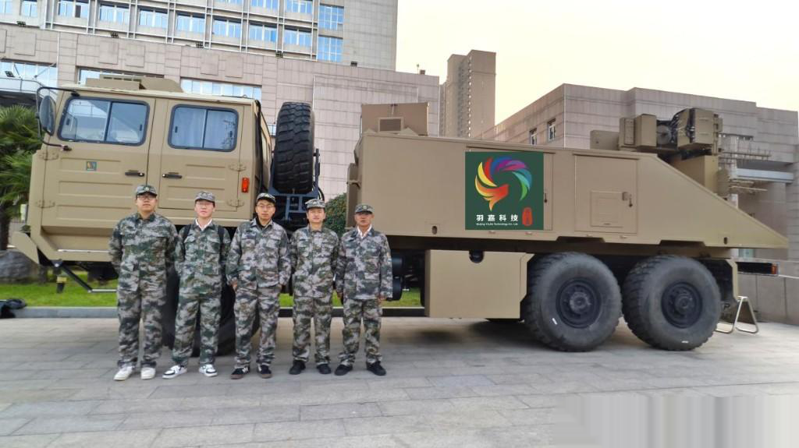
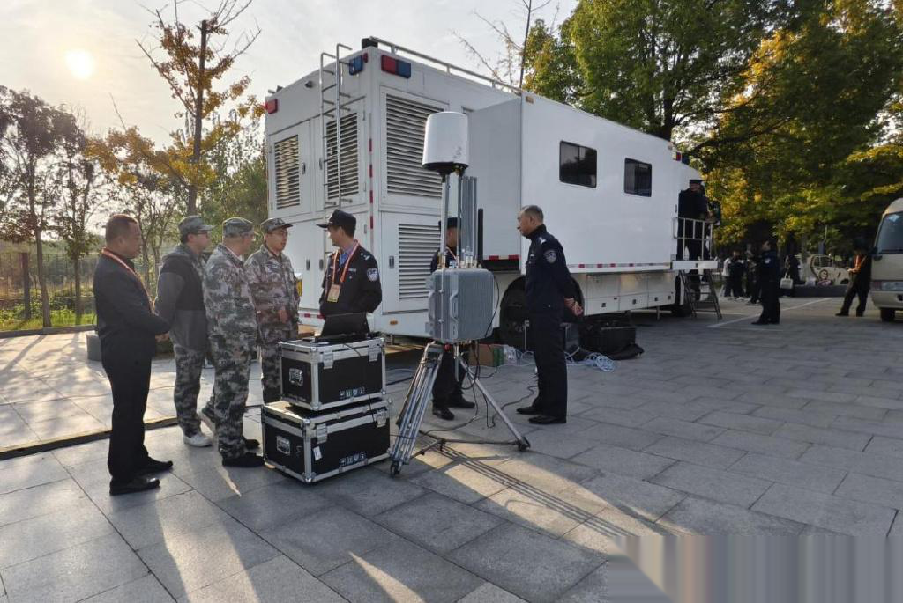
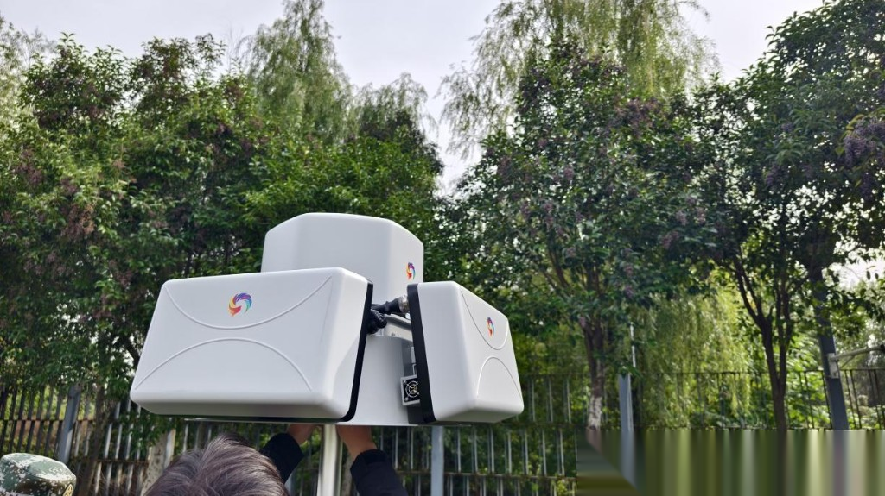

商丘华商文化节低空安保复盘：城市级防控网第一次怎么建
导读 本文面向公安及城市低空安全管理部门，以2025年10月商丘华商文化节低空安保为样本，复盘城市级防控网在重大活动场景中的挑战、闭环能力与可复制做法。
导语：重大活动上空，容错率几乎为零
2025年10月商丘华商文化节期间，当地首次构建城市级低空防控网。活动当天侦测到接近20架次无人机，对未报备目标分级驱离、全部安全返航。
大型文化节、博览会一类活动，地面是人流高峰，天上同样不安静。航拍、跟拍、未报备飞行一旦闯入核心空域，轻则扰序，重则酿成公共安全风险。
看不看得见？辨不辨得清？管不管得住？处置完能不能留痕复盘？
2025年10月，商丘华商文化节恰逢重阳。对当地而言，这不仅是一场文化盛会，也是第一次构建城市级低空防控网的实战考场。

华商文化广场 · 羽嘉车载一体化反无人机系统（实拍）
一 场景挑战：为什么临时盯梢不够用？
重大活动低空安保，难在三个叠加。
• 第一，空域敏感。核心会场、人员密集区、临时活动空域短时间内同时升温，传统「临时看一眼」难以覆盖。
• 第二，目标多样。合法航拍与未报备飞行混杂，看不见、辨不清，就容易误处置或漏处置。
• 第三，指挥链条长。侦测、研判、驱离、现场核查如果不在同一套流程里，设备看到了、平台没联动，仍然管不住。
商丘这场活动的意义正在于此：不是单点加几台设备，而是把城市级低空防控能力首次拉起来，接受真实流量检验。
重大活动低空治理，拼的不是临时勇气，而是可运转的体系。
二 察：先把天上目标纳进视野
闭环的第一步是「察」。没有稳定感知，后面的定级、处置都无从谈起。
文化节现场需要的，是对活动空域持续监测，把进入关注范围的飞行目标及时发现出来。活动当天，系统累计侦测到接近 20 架次无人机。

现场指挥车 + 多源探测设备值守（实拍）
这个数字说明两件事：一是重大活动期间低空并不「安静」；二是如果缺乏常态化感知能力，这些目标很可能在事后才变成投诉或事故线索。
低空治理第一步，是让异常飞行进入管理者视野。
三 控：报备比对与威胁定级
看见目标，不等于看懂风险。
实战中要把飞行计划、报备信息与实时目标对齐：谁是合规飞行，谁是未报备闯入；靠近核心区还是外围；需要提醒劝离，还是进入更高处置等级。
「控」的价值，是把「发现一个点」变成「判断一类事」，避免所有目标都按最高强度处置，也避免该管的没管住。
对公安实战来说，智能研判不是替代指挥员，而是把经验判断变成可复用的辅助决策。
低空管控不只是看见目标，更要看清身份、看准风险。

多源探测设备现场部署（实拍）
四 打与评：分级驱离，全程留痕
对未报备目标，商丘现场采取的是分级驱离：按风险与区域属性匹配处置强度，目标全部安全返航，文化节与重阳安保平稳有序，没有因处置不当造成次生混乱。
「打」在这里首先是依法、审慎、可控地管住风险，而不是简单追求「打下来」。
「评」则要求处置过程可回看：何时发现、如何定级、如何处置、结果如何，能够归档复盘，为下一场活动优化预案。

行业里把这条链概括成「察 · 控 · 打 · 评」。羽嘉科技「猎场一号」警用低空防务智能实战平台，正是把上述闭环做成可调度的业务系统：兼容主流侦测反制设备，按公安业务流程支撑重大活动与城市常态场景。
真正有效的实战体系，经得起人流高峰和空域高压同时到来。
结 城市级防控网，要在活动里跑通，更要在日常里留住
商丘华商文化节给出的启示很清楚。
• 第一，重大活动是检验低空治理能力的试金石，也是城市级防控网建设的切入点。
• 第二，闭环比单点设备更重要：侦测、定级、处置、复盘必须串在同一条业务链上。
• 第三，首场活动跑通之后，能力应沉淀为常态机制，而不是活动结束就撤掉。
低空经济越热闹，重大活动上空越需要主动防控。从「临时应对」转向「体系值守」，才是城市管理者真正要补的课。
—— 关于我们 ——
羽嘉科技，城市级低空安全解决方案提供商，
「猎场一号」警用低空防务智能实战平台研发者。
让低空管理从「被动应对」转向「主动防控」。
免责声明：本文相关信息引自公开交流材料与行业实践复盘，仅供交流参考，不涉及客户内部流程、部署点位与设备数量，不构成任何决策依据。如有侵权请联系删除。
使用说明：浏览器打开可预览。发公众号时按「配图/配图清单.md」上传 00–04（仅商丘）。